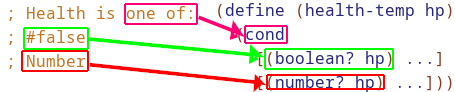
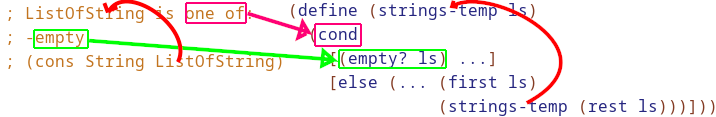

Data Directed Design
The structure of the code should mirror the structure of the data.
#Union data

#Structural Recursion

Notice the ... in the template for ListOfString. There are only two main places you need to be focusing on, the base case, and how to contribute/combine to it.
Consider the following 3 recursive functions:has-choco? sum-prices count-items
; Notice the similarities between 3 recursive functions
; has-choco?: (ListOfString -> Boolean)
; produces #true if the list contains "chocolate"
(check-expect (has-choco? empty) #false)
(check-expect (has-choco? (cons "vanilla" (cons "chocolate" empty))) #true)
(define (has-choco? flavs)
(cond
[(empty? flavs) #false]
[else
(if (string=? (first flavs) "chocolate")
#true
(has-choco? (rest flavs)))]))
; sum-prices (ListOfNumber -> Number)
; produces the combined sum total of all the numbers in the given list
(check-expect (sum-prices empty) 0)
(check-expect (sum-prices (cons 3.22 (cons 4 empty))) (+ 4 3.22))
(define (sum-prices nums)
(cond
[(empty? nums) 0]
[else
(+ (first nums)
(sum-prices (rest nums)))]))
; count-items: (ListOfNumber -> Number)
; produces the COUNT of how many numbers are in the list
(check-expect (count-items empty) 0)
(check-expect (count-items (cons 3.22 (cons 4 empty))) 2)
(define (count-items nums)
(cond
[(empty? nums) 0]
[else
(+ 1
(count-items (rest nums)))]))
Here is a table in the main ways they differ:
| Function | Base | Contribution of first | Combination |
|---|---|---|---|
has-choco? |
false |
(string=? (first flavs) \"chocolate\") |
(if <condition> #true <recurse>) |
sum-prices |
0 |
itself | + |
count-items |
0 |
1 | + |